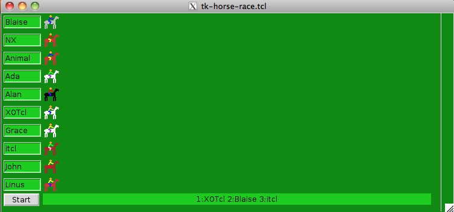

A small Horse Race game, originally developed by Richard Suchenwirth in plain Tcl (see http://wiki.tcl.tk/3467). The game was rewritten as a design study in NX by Gustaf Neumann in May 2011.

package require Tk package require nx::callback ############################################################################## # Trait ListUtils # # Some list utilities, not part of a package we can require here. ############################################################################## nx::Trait create TListUtils { :protected method lpick {list} { # return a random entry from a given list lindex $list [expr {int(rand()*[llength $list])}] } :protected method lremove {listName what} { # remove a list element referenced by the elements value :upvar $listName list set pos [lsearch $list $what] set list [lreplace $list $pos $pos] } } ############################################################################## # Class Horse # # This class defines the logic, how and where a single horse and # jockey are drawn. The painting of the horse happens just at startup # time, later the horses are moved via their tags. ############################################################################## nx::Class create Horse { :property name:required ;# name is the external name of the horse :property tag:required ;# tag is an internal id :property canvas:required ;# the canvas, on which the horse is drawn :property n:integer,required ;# the position on the canvas :require trait nx::TCallback :require trait TListUtils :method draw {x y} { set hide [:lpick {black brown white gray brown3 brown4}] set c1 [:lpick {red yellow blue purple pink green}] set c2 [:lpick {red yellow blue purple pink green}] ${:canvas} create oval 0 -1 18 4 -fill $hide -outline $hide -tag ${:tag} ${:canvas} create line 1 12 3 0 5 12 -fill $hide -tag ${:tag} -width 2 ${:canvas} create line 15 12 17 0 19 12 -fill $hide -tag ${:tag} -width 2 ${:canvas} create line 16 0 20 -7 24 -5 -fill $hide -tag ${:tag} -width 3 # Jockey: ${:canvas} create line 9 4 11 1 7 -1 -fill $c1 -width 2 -tag ${:tag} ${:canvas} create line 7 -2 10 -6 15 -3 -fill $c2 -width 2 -tag ${:tag} ${:canvas} create oval 9 -7 12 -10 -fill orange -outline orange -tag ${:tag} ${:canvas} move ${:tag} $x $y } :method init {} { set w [entry ${:canvas}.e${:n} -textvar [:bindvar name] -width 7 -bg green3] ${:canvas} create window 5 [expr {${:n}*30+5}] -window $w -anchor nw :draw 70 [expr {${:n}*30+14}] } } ############################################################################## # Class HorseGame # # Defines the main canvas of the Game and contains the logic of # starting, resetting etc. ############################################################################## nx::Class create HorseGame { :property {bg1 green4} ;# background color of the canvas :property {bg2 green3} ;# background color of the result label :property {width 750} ;# width of the canvas :property {height 330} ;# height of the canvas :property {horses} ;# a list of horse names participating in the game :require trait nx::TCallback :require trait TListUtils :method init {} { # # create the canvas # set :canvas [canvas .c -bg ${:bg1} -width ${:width} -height ${:height}] pack ${:canvas} # # create the Horses # set n 0 foreach name ${:horses} { set h [::Horse create horse$n -name $name -canvas ${:canvas} -n $n -tag horse$n] lappend :tags horse$n incr n } # finish line set w [expr {${:width} - 20}] ${:canvas} create line $w 0 $w ${:height} -fill white -tag finish # start button button ${:canvas}.button -text Start -pady 0 -width 0 \ -command [:callback start ${:tags}] ${:canvas} create window 5 [expr {$n*30}] -window ${:canvas}.button -anchor nw # label for the results label ${:canvas}.winners -textvar [:bindvar winners] -bg ${:bg2} -width 80 ${:canvas} create window 70 [expr {$n*30}] -window ${:canvas}.winners -anchor nw } :public method start {running} { # # When the "Start" button is pressed, we turn this button into a # "Reset" button and the horse race starts. We stop, when more # than two horses pass the finish line. # ${:canvas}.button config -text Reset -command [:callback reset] set :winners {} set finish [expr {[lindex [${:canvas} bbox finish] 2]+10}] while {[llength ${:winners}]<3} { set this [:lpick $running] ${:canvas} move $this [:lpick {0 1 2 3}] 0 update if {[lindex [${:canvas} bbox $this] 2] > $finish} { lappend :winners [expr {[llength ${:winners}]+1}]:[$this name] :lremove running $this } } } :public method reset {} { # # When the "Reset" button is pressed, we switch back to the start # configuration, the horses come back to the start. # ${:canvas}.button config -text Start -command [:callback start ${:tags}] foreach tag ${:tags} { set x [lindex [${:canvas} bbox $tag] 0] ${:canvas} move $tag [expr {70-$x}] 0 } } } # # everything is defined, create the game # bind . <space> {exec wish $argv0 &; exit} HorseGame new -horses {Blaise NX Animal Ada Alan XOTcl Grace itcl John Linus}